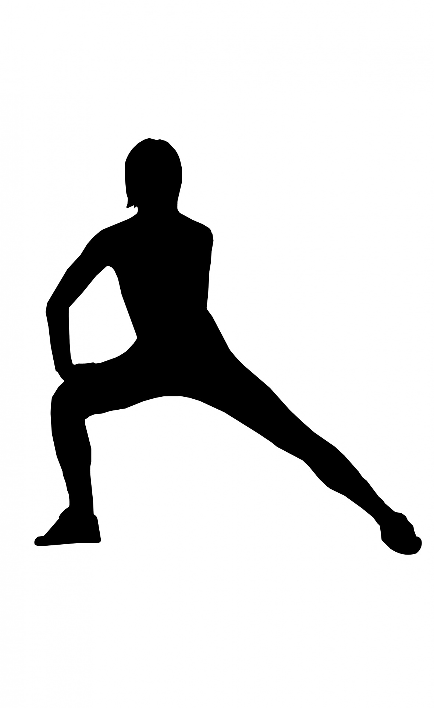

Move between rounds. Live longer between deaths.
A basic health and fitness app for gamers — pick a rep range, get a randomized count of lunges to do between long sedentary sessions, and track your progress over time.

LiveOrLunge grew out of a habit some gamers already have — knocking out a small set of bodyweight exercises between deaths in a hard multiplayer match. The app formalizes it.
Pick a minimum and maximum rep count. The app rolls a random number in that range. Do the reps, save the set if you want, and look back at what you've done over time. That's it.
Built in Swift for iOS. Simple by design — the point is the break, not the app.